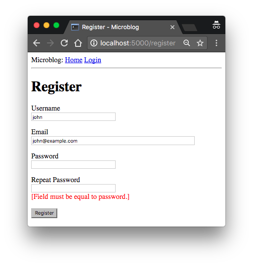

The Flask Mega-Tutorial Part V: User Logins (2018)
Posted by
on under(Great news! There is a new version of this tutorial!)
This is the fifth installment of the Flask Mega-Tutorial series, in which I'm going to tell you how to create a user login subsystem.
For your reference, below is a list of the articles in this series.
- Chapter 1: Hello, World!
- Chapter 2: Templates
- Chapter 3: Web Forms
- Chapter 4: Database
- Chapter 5: User Logins (this article)
- Chapter 6: Profile Page and Avatars
- Chapter 7: Error Handling
- Chapter 8: Followers
- Chapter 9: Pagination
- Chapter 10: Email Support
- Chapter 11: Facelift
- Chapter 12: Dates and Times
- Chapter 13: I18n and L10n
- Chapter 14: Ajax
- Chapter 15: A Better Application Structure
- Chapter 16: Full-Text Search
- Chapter 17: Deployment on Linux
- Chapter 18: Deployment on Heroku
- Chapter 19: Deployment on Docker Containers
- Chapter 20: Some JavaScript Magic
- Chapter 21: User Notifications
- Chapter 22: Background Jobs
- Chapter 23: Application Programming Interfaces (APIs)
In Chapter 3 you learned how to create the user login form, and in Chapter 4 you learned how to work with a database. This chapter will teach you how to combine the topics from those two chapters to create a simple user login system.
The GitHub links for this chapter are: Browse, Zip, Diff.
Password Hashing
In Chapter 4 the user model was given a password_hash field, that so far is unused. The purpose of this field is to hold a hash of the user password, which will be used to verify the password entered by the user during the log in process. Password hashing is a complicated topic that should be left to security experts, but there are several easy to use libraries that implement all that logic in a way that is simple to be invoked from an application.
One of the packages that implement password hashing is Werkzeug, which you may have seen referenced in the output of pip when you install Flask, since it is one of its core dependencies. Since it is a dependency, Werkzeug is already installed in your virtual environment. The following Python shell session demonstrates how to hash a password:
>>> from werkzeug.security import generate_password_hash
>>> hash = generate_password_hash('foobar')
>>> hash
'pbkdf2:sha256:50000$vT9fkZM8$04dfa35c6476acf7e788a1b5b3c35e217c78dc04539d295f011f01f18cd2'
In this example, the password foobar is transformed into a long encoded string through a series of cryptographic operations that have no known reverse operation, which means that a person that obtains the hashed password will be unable to use it to obtain the original password. As an additional measure, if you hash the same password multiple times, you will get different results, so this makes it impossible to identify if two users have the same password by looking at their hashes.
The verification process is done with a second function from Werkzeug, as follows:
>>> from werkzeug.security import check_password_hash
>>> check_password_hash(hash, 'foobar')
True
>>> check_password_hash(hash, 'barfoo')
False
The verification function takes a password hash that was previously generated, and a password entered by the user at the time of log in. The function returns True if the password provided by the user matches the hash, or False otherwise.
The whole password hashing logic can be implemented as two new methods in the user model:
app/models.py: Password hashing and verification
from werkzeug.security import generate_password_hash, check_password_hash
# ...
class User(db.Model):
# ...
def set_password(self, password):
self.password_hash = generate_password_hash(password)
def check_password(self, password):
return check_password_hash(self.password_hash, password)
With these two methods in place, a user object is now able to do secure password verification, without the need to ever store original passwords. Here is an example usage of these new methods:
>>> u = User(username='susan', email='susan@example.com')
>>> u.set_password('mypassword')
>>> u.check_password('anotherpassword')
False
>>> u.check_password('mypassword')
True
Introduction to Flask-Login
In this chapter I'm going to introduce you to a very popular Flask extension called Flask-Login. This extension manages the user logged-in state, so that for example users can log in to the application and then navigate to different pages while the application "remembers" that the user is logged in. It also provides the "remember me" functionality that allows users to remain logged in even after closing the browser window. To be ready for this chapter, you can start by installing Flask-Login in your virtual environment:
(venv) $ pip install flask-login
As with other extensions, Flask-Login needs to be created and initialized right after the application instance in app/__init__.py. This is how this extension is initialized:
app/__init__.py: Flask-Login initialization
# ...
from flask_login import LoginManager
app = Flask(__name__)
# ...
login = LoginManager(app)
# ...
Preparing The User Model for Flask-Login
The Flask-Login extension works with the application's user model, and expects certain properties and methods to be implemented in it. This approach is nice, because as long as these required items are added to the model, Flask-Login does not have any other requirements, so for example, it can work with user models that are based on any database system.
The four required items are listed below:
is_authenticated: a property that isTrueif the user has valid credentials orFalseotherwise.is_active: a property that isTrueif the user's account is active orFalseotherwise.is_anonymous: a property that isFalsefor regular users, andTruefor a special, anonymous user.get_id(): a method that returns a unique identifier for the user as a string (unicode, if using Python 2).
I can implement these four easily, but since the implementations are fairly generic, Flask-Login provides a mixin class called UserMixin that includes generic implementations that are appropriate for most user model classes. Here is how the mixin class is added to the model:
app/models.py: Flask-Login user mixin class
# ...
from flask_login import UserMixin
class User(UserMixin, db.Model):
# ...
User Loader Function
Flask-Login keeps track of the logged in user by storing its unique identifier in Flask's user session, a storage space assigned to each user who connects to the application. Each time the logged-in user navigates to a new page, Flask-Login retrieves the ID of the user from the session, and then loads that user into memory.
Because Flask-Login knows nothing about databases, it needs the application's help in loading a user. For that reason, the extension expects that the application will configure a user loader function, that can be called to load a user given the ID. This function can be added in the app/models.py module:
app/models.py: Flask-Login user loader function
from app import login
# ...
@login.user_loader
def load_user(id):
return User.query.get(int(id))
The user loader is registered with Flask-Login with the @login.user_loader decorator. The id that Flask-Login passes to the function as an argument is going to be a string, so databases that use numeric IDs need to convert the string to integer as you see above.
Logging Users In
Let's revisit the login view function, which as you recall, implemented a fake login that just issued a flash() message. Now that the application has access to a user database and knows how to generate and verify password hashes, this view function can be completed.
app/routes.py: Login view function logic
# ...
from flask_login import current_user, login_user
from app.models import User
# ...
@app.route('/login', methods=['GET', 'POST'])
def login():
if current_user.is_authenticated:
return redirect(url_for('index'))
form = LoginForm()
if form.validate_on_submit():
user = User.query.filter_by(username=form.username.data).first()
if user is None or not user.check_password(form.password.data):
flash('Invalid username or password')
return redirect(url_for('login'))
login_user(user, remember=form.remember_me.data)
return redirect(url_for('index'))
return render_template('login.html', title='Sign In', form=form)
The top two lines in the login() function deal with a weird situation. Imagine you have a user that is logged in, and the user navigates to the /login URL of your application. Clearly that is a mistake, so I want to not allow that. The current_user variable comes from Flask-Login and can be used at any time during the handling to obtain the user object that represents the client of the request. The value of this variable can be a user object from the database (which Flask-Login reads through the user loader callback I provided above), or a special anonymous user object if the user did not log in yet. Remember those properties that Flask-Login required in the user object? One of those was is_authenticated, which comes in handy to check if the user is logged in or not. When the user is already logged in, I just redirect to the index page.
In place of the flash() call that I used earlier, now I can log the user in for real. The first step is to load the user from the database. The username came with the form submission, so I can query the database with that to find the user. For this purpose I'm using the filter_by() method of the SQLAlchemy query object. The result of filter_by() is a query that only includes the objects that have a matching username. Since I know there is only going to be one or zero results, I complete the query by calling first(), which will return the user object if it exists, or None if it does not. In Chapter 4 you have seen that when you call the all() method in a query, the query executes and you get a list of all the results that match that query. The first() method is another commonly used way to execute a query, when you only need to have one result.
If I got a match for the username that was provided, I can next check if the password that also came with the form is valid. This is done by invoking the check_password() method I defined above. This will take the password hash stored with the user and determine if the password entered in the form matches the hash or not. So now I have two possible error conditions: the username can be invalid, or the password can be incorrect for the user. In either of those cases, I flash an message, and redirect back to the login prompt so that the user can try again.
If the username and password are both correct, then I call the login_user() function, which comes from Flask-Login. This function will register the user as logged in, so that means that any future pages the user navigates to will have the current_user variable set to that user.
To complete the login process, I just redirect the newly logged-in user to the index page.
Logging Users Out
I know I will also need to offer users the option to log out of the application. This can be done with Flask-Login's logout_user() function. Here is the logout view function:
app/routes.py: Logout view function
# ...
from flask_login import logout_user
# ...
@app.route('/logout')
def logout():
logout_user()
return redirect(url_for('index'))
To expose this link to users, I can make the Login link in the navigation bar automatically switch to a Logout link after the user logs in. This can be done with a conditional in the base.html template:
app/templates/base.html: Conditional login and logout links
<div>
Microblog:
<a href="{{ url_for('index') }}">Home</a>
{% if current_user.is_anonymous %}
<a href="{{ url_for('login') }}">Login</a>
{% else %}
<a href="{{ url_for('logout') }}">Logout</a>
{% endif %}
</div>
The is_anonymous property is one of the attributes that Flask-Login adds to user objects through the UserMixin class. The current_user.is_anonymous expression is going to be True only when the user is not logged in.
Requiring Users To Login
Flask-Login provides a very useful feature that forces users to log in before they can view certain pages of the application. If a user who is not logged in tries to view a protected page, Flask-Login will automatically redirect the user to the login form, and only redirect back to the page the user wanted to view after the login process is complete.
For this feature to be implemented, Flask-Login needs to know what is the view function that handles logins. This can be added in app/__init__.py:
# ...
login = LoginManager(app)
login.login_view = 'login'
The 'login' value above is the function (or endpoint) name for the login view. In other words, the name you would use in a url_for() call to get the URL.
The way Flask-Login protects a view function against anonymous users is with a decorator called @login_required. When you add this decorator to a view function below the @app.route decorators from Flask, the function becomes protected and will not allow access to users that are not authenticated. Here is how the decorator can be applied to the index view function of the application:
app/routes.py: @login\_required decorator
from flask_login import login_required
@app.route('/')
@app.route('/index')
@login_required
def index():
# ...
What remains is to implement the redirect back from the successful login to the page the user wanted to access. When a user that is not logged in accesses a view function protected with the @login_required decorator, the decorator is going to redirect to the login page, but it is going to include some extra information in this redirect so that the application can then return to the first page. If the user navigates to /index, for example, the @login_required decorator will intercept the request and respond with a redirect to /login, but it will add a query string argument to this URL, making the complete redirect URL /login?next=/index. The next query string argument is set to the original URL, so the application can use that to redirect back after login.
Here is a snippet of code that shows how to read and process the next query string argument:
app/routes.py: Redirect to "next" page
from flask import request
from werkzeug.urls import url_parse
@app.route('/login', methods=['GET', 'POST'])
def login():
# ...
if form.validate_on_submit():
user = User.query.filter_by(username=form.username.data).first()
if user is None or not user.check_password(form.password.data):
flash('Invalid username or password')
return redirect(url_for('login'))
login_user(user, remember=form.remember_me.data)
next_page = request.args.get('next')
if not next_page or url_parse(next_page).netloc != '':
next_page = url_for('index')
return redirect(next_page)
# ...
Right after the user is logged in by calling Flask-Login's login_user() function, the value of the next query string argument is obtained. Flask provides a request variable that contains all the information that the client sent with the request. In particular, the request.args attribute exposes the contents of the query string in a friendly dictionary format. There are actually three possible cases that need to be considered to determine where to redirect after a successful login:
- If the login URL does not have a
nextargument, then the user is redirected to the index page. - If the login URL includes a
nextargument that is set to a relative path (or in other words, a URL without the domain portion), then the user is redirected to that URL. - If the login URL includes a
nextargument that is set to a full URL that includes a domain name, then the user is redirected to the index page.
The first and second cases are self-explanatory. The third case is in place to make the application more secure. An attacker could insert a URL to a malicious site in the next argument, so the application only redirects when the URL is relative, which ensures that the redirect stays within the same site as the application. To determine if the URL is relative or absolute, I parse it with Werkzeug's url_parse() function and then check if the netloc component is set or not.
Showing The Logged In User in Templates
Do you recall that way back in Chapter 2 I created a fake user to help me design the home page of the application before the user subsystem was in place? Well, the application has real users now, so I can now remove the fake user and start working with real users. Instead of the fake user I can use Flask-Login's current_user in the template:
app/templates/index.html: Pass current user to template
{% extends "base.html" %}
{% block content %}
<h1>Hi, {{ current_user.username }}!</h1>
{% for post in posts %}
<div><p>{{ post.author.username }} says: <b>{{ post.body }}</b></p></div>
{% endfor %}
{% endblock %}
And I can remove the user template argument in the view function:
app/routes.py: Do not pass user to template anymore
@app.route('/')
@app.route('/index')
@login_required
def index():
# ...
return render_template("index.html", title='Home Page', posts=posts)
This is a good time to test how the login and logout functionality works. Since there is still no user registration, the only way to add a user to the database is to do it via the Python shell, so run flask shell and enter the following commands to register a user:
>>> u = User(username='susan', email='susan@example.com')
>>> u.set_password('cat')
>>> db.session.add(u)
>>> db.session.commit()
If you start the application and go to the application's / or /index URLs, you will be immediately redirected to the login page, and after you log in using the credentials of the user that you added to your database, you will be returned to the original page, in which you will see a personalized greeting.
User Registration
The last piece of functionality that I'm going to build in this chapter is a registration form, so that users can register themselves through a web form. Let's begin by creating the web form class in app/forms.py:
app/forms.py: User registration form
from flask_wtf import FlaskForm
from wtforms import StringField, PasswordField, BooleanField, SubmitField
from wtforms.validators import ValidationError, DataRequired, Email, EqualTo
from app.models import User
# ...
class RegistrationForm(FlaskForm):
username = StringField('Username', validators=[DataRequired()])
email = StringField('Email', validators=[DataRequired(), Email()])
password = PasswordField('Password', validators=[DataRequired()])
password2 = PasswordField(
'Repeat Password', validators=[DataRequired(), EqualTo('password')])
submit = SubmitField('Register')
def validate_username(self, username):
user = User.query.filter_by(username=username.data).first()
if user is not None:
raise ValidationError('Please use a different username.')
def validate_email(self, email):
user = User.query.filter_by(email=email.data).first()
if user is not None:
raise ValidationError('Please use a different email address.')
There are a couple of interesting things in this new form related to validation. First, for the email field I've added a second validator after DataRequired, called Email. This is another stock validator that comes with WTForms that will ensure that what the user types in this field matches the structure of an email address.
The Email() validator from WTForms requires an external dependency to be installed:
(venv) $ pip install email-validator
Since this is a registration form, it is customary to ask the user to type the password two times to reduce the risk of a typo. For that reason I have password and password2 fields. The second password field uses yet another stock validator called EqualTo, which will make sure that its value is identical to the one for the first password field.
When you add any methods that match the pattern validate_<field_name>, WTForms takes those as custom validators and invokes them in addition to the stock validators. I have added two of those methods to this class for the username and email fields. In this case I want to make sure that the username and email address entered by the user are not already in the database, so these two methods issue database queries expecting there will be no results. In the event a result exists, a validation error is triggered by raising an exception of type ValidationError. The message included as the argument in the exception will be the message that will be displayed next to the field for the user to see.
To display this form on a web page, I need to have an HTML template, which I'm going to store in file app/templates/register.html. This template is constructed similarly to the one for the login form:
app/templates/register.html: Registration template
{% extends "base.html" %}
{% block content %}
<h1>Register</h1>
<form action="" method="post">
{{ form.hidden_tag() }}
<p>
{{ form.username.label }}<br>
{{ form.username(size=32) }}<br>
{% for error in form.username.errors %}
<span style="color: red;">[{{ error }}]</span>
{% endfor %}
</p>
<p>
{{ form.email.label }}<br>
{{ form.email(size=64) }}<br>
{% for error in form.email.errors %}
<span style="color: red;">[{{ error }}]</span>
{% endfor %}
</p>
<p>
{{ form.password.label }}<br>
{{ form.password(size=32) }}<br>
{% for error in form.password.errors %}
<span style="color: red;">[{{ error }}]</span>
{% endfor %}
</p>
<p>
{{ form.password2.label }}<br>
{{ form.password2(size=32) }}<br>
{% for error in form.password2.errors %}
<span style="color: red;">[{{ error }}]</span>
{% endfor %}
</p>
<p>{{ form.submit() }}</p>
</form>
{% endblock %}
The login form template needs a link that sends new users to the registration form, right below the form:
app/templates/login.html: Link to registration page
<p>New User? <a href="{{ url_for('register') }}">Click to Register!</a></p>
And finally, I need to write the view function that is going to handle user registrations in app/routes.py:
app/routes.py: User registration view function
from app import db
from app.forms import RegistrationForm
# ...
@app.route('/register', methods=['GET', 'POST'])
def register():
if current_user.is_authenticated:
return redirect(url_for('index'))
form = RegistrationForm()
if form.validate_on_submit():
user = User(username=form.username.data, email=form.email.data)
user.set_password(form.password.data)
db.session.add(user)
db.session.commit()
flash('Congratulations, you are now a registered user!')
return redirect(url_for('login'))
return render_template('register.html', title='Register', form=form)
And this view function should also be mostly self-explanatory. I first make sure the user that invokes this route is not logged in. The form is handled in the same way as the one for logging in. The logic that is done inside the if validate_on_submit() conditional creates a new user with the username, email and password provided, writes it to the database, and then redirects to the login prompt so that the user can log in.

With these changes, users should be able to create accounts on this application, and log in and out. Make sure you try all the validation features I've added in the registration form to better understand how they work. I am going to revisit the user authentication subsystem in a future chapter to add additional functionality such as to allow the user to reset the password if forgotten. But for now, this is enough to continue building other areas of the application.
Become a Patron!
Hello, and thank you for visiting my blog! If you enjoyed this article, please consider supporting my work on this blog on Patreon!

-
#176 Miguel Grinberg said
@Antoni: are you calling user.set_password() when the user registers the password? I believe the error occurs because your user has the password_hash property set to None instead of a string.
-
#177 cs said
Regarding emails - whether they are used as the username or not, shouldn't there be a transpose step to convert case so that a database search on the indexed col would not treat the same address as a new address simply because the case is different? Would using the SQLAlchemy EmailType for the datastore in combination with a simple lower string method on the email input work in this case?
-
#178 Angella Naigaga said
Hey Miguel, I am trying to work on Chapter 5: User Logins (this article) but my browser can't load any of the pages i.e register, login and index. i get the error "Internal server error". Could you help me trace me my way?
-
#179 Miguel Grinberg said
@cs: that's actually a good idea, normalizing all emails to lower case would prevent duplicates.
-
#180 Miguel Grinberg said
@Angella: the terminal session where you are running the Flask application will have an error message that you can use to help you debug the issue.
-
#181 abdou beneddine said
thank you for tutorial
i have a question: can I use flask-login with sqlserver and how?
thank you. -
#182 Miguel Grinberg said
@abdou: Flask-Login does not interact with the database at all. If you have a user object in your application, then you can use Flask-Login with it. Just follow the instructions in the extension's documentation to prepare your object.
-
#183 Josh Sullivan said
When I add the UserMixin to my User class and perform a migration, it doesn't create the 4 needed fields. Any ideas?
from flask_login import UserMixin
from datetime import datetimeclass User(UserMixin, db.Model):
id = db.Column(db.Integer, primary_key=True)
username = db.Column(db.String(64), unique=True)
email = db.Column(db.String(120), unique=True)
password = db.Column(db.String(128))def __repr__(self): return self.username -
#184 Miguel Grinberg said
@Josh: How did you determine that the four required attributes were not added to your class?
-
#185 Vick said
Hello, I'm completely new in python(and programming languages) and I'm using your Flsk tutorial to understand how python works. I completed this tutorial successfully and my application seems to be correct. But when I try to register a new user through the application it gives back an internal error(my shells returns:
'raise BuildError(endpoint, values, method, self)
BuildError: Could not build URL for endpoint 'logout'. Did you mean 'login' instead?')
Is it alright(it will come in the next ch.) or there is is a problem in the app? -
#186 Iain said
Great tutorial Miguel!
I've got a quick question about the validate_username() and validate_email() methods in the RegistrationForm class: if these errors are raised, how does the form know to associate them with a particular field?
-
#187 Ankur said
Hi,
At the time of login, session cookie is set. I want to set its expiration time, for which I am using PERMANENT_SESSION_LIFETIME. For this to work, I need to set session.permanent = True. Where in our code, I can set it? I am thinking of doing it in login route after login_user is set. -
#188 Tej said
Once after register/login... Error occured in web page
Internal Server Error
The server encountered an internal error and was unable to complete your request. Either the server is overloaded or there is an error in the application.In terminal error is:
Traceback (most recent call last):
File "/home/tej/Documents/microblog/myflask/local/lib/python2.7/site-packages/flask/app.py", line 2292, in wsgi_app
response = self.full_dispatch_request()
File "/home/tej/Documents/microblog/myflask/local/lib/python2.7/site-packages/flask/app.py", line 1815, in full_dispatch_request
rv = self.handle_user_exception(e)
File "/home/tej/Documents/microblog/myflask/local/lib/python2.7/site-packages/flask/app.py", line 1718, in handle_user_exception
reraise(exc_type, exc_value, tb)
File "/home/tej/Documents/microblog/myflask/local/lib/python2.7/site-packages/flask/app.py", line 1813, in full_dispatch_request
rv = self.dispatch_request()
File "/home/tej/Documents/microblog/myflask/local/lib/python2.7/site-packages/flask/app.py", line 1799, in dispatch_request
return self.view_functionsrule.endpoint
File "/home/tej/Documents/microblog/app/routes.py", line 48, in login
next_page = request.args.get('next')
NameError: global name 'request' is not definedWhat might be the reason?
-
#189 Miguel Grinberg said
@Vick: you seem to be missing the logout route, or maybe you have it but used a different name for it.
-
#190 Miguel Grinberg said
@Iain: Flask-WTF wraps the validate_username, etc. calls with a try/except block, so it immediately finds out if a field raised in a custom validator.
-
#191 Miguel Grinberg said
@Ankur: you can set it in the before_request handler, for example, to ensure that all endpoints have it.
-
#192 Miguel Grinberg said
@Tej: you need to import request. Add "from flask import request".
-
#193 Rolandas said
Hi, I realy like your book and tutorial! I'm doing it and stuck on the this tutorial in the way that after next it should redirect to index page, but I get error using this code, it says an't redirect to '/index' do you mean 'index'.
The code:
@app.route('/login', methods=['GET', 'POST'])
def login():
if current_user.is_authenticated:
return redirect(url_for('index'))form = LoginForm() if form.validate_on_submit(): user = User.query.filter_by(username=form.username.data).first() if user is None or not user.check_password(form.password.data): flash('Invalid password') return redirect(url_for('login')) login_user(user, remember=form.remember_me.data) next_page = request.args.get('next') if not next_page or url_parse(next_page).netloc != '': next_page = url_for('index') return redirect(url_for(next_page)) return render_template('login.html', title='Sign In', form=form)The error:
File "c:\dev\microblog\venv\lib\site-packages\werkzeug\routing.py", line 1776, in build
raise BuildError(endpoint, values, method, self)
werkzeug.routing.BuildError: Could not build url for endpoint '/index'. Did you mean 'index' instead?What the issue might be?
-
#194 Miguel Grinberg said
@Rolandas: the code that you showed is fine. The bad url_for() call must be somewhere else, maybe in the login.html template?
-
#195 AR said
Hi Miguel,
When the anonymous user attempts to accessed a page with @login_required and gets directed to login page, I want to send him back to the origin page rather than next page. For this I have used request.referrer. But since the url of the login page contain 'next', as soon as the login form is posted, contents of request.referrer gets updated to the url of login page with 'next' url details.
One way of keeping the referrer url details intact would be to change the login url details and make it contain referrer url rather than next url. But I could not found a way to do it. Please suggest a way to do it or any other better way. I need to redirect the user after login back to the referrer in some cases and to the next url in other cases.
-
#196 Miguel Grinberg said
@AR: I think you don't understand how this works. The page referenced in the "next" argument is the original page the user visited.
-
#197 Francesco said
Hi Miguel,
I've followed your tutorial and i'm stuck on this chapter. I copied all your code but when I start the flask server I get this error:
AppData\Local\Programs\Python\Python36\lib\site-packages\flask_login\login_manager.py", line 321, in reload_user
user = self.user_callback(user_id)
TypeError: load_user() missing 1 required positional argument: 'id'I tried to delete all users and create a new one but I still have this error. What can I do?
-
#198 Igor said
Hello Miguel!
Thank you for your best tutorial!Maybe you could help me to find the solution for my problem?
I have received an error:File "/Users/.../microblog/venv/lib/python3.6/site-packages/wtforms/fields/core.py", line 226, in _run_validation_chain validator(form, self)
TypeError: validate_username() takes 1 positional argument but 2 were givenwhile submit "Register" form (while running "if form.validate_on_submit()").
I have checked the code and couldn't find any mistakes.
The username parameter is correct in my RegistrationForm class:
username = StringField('Username', validators=[DataRequired()])I really stack in it because I already check my code several times and sniff data in post request and all it look ok. Maybe you could help me with direction?
-
#199 Gabriel Montañola said
Hi there Miguel,
Is there any difference between using flask-bcrypt vs. werkzeug.security functions?
Example: https://ghostbin.com/paste/ykyac
Thanks in advance,
Gabriel -
#200 Miguel Grinberg said
@Francesco: your load_user() function is declared with no arguments, but this function needs to have an "id" argument.